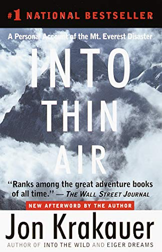

One of the most special experiences in my life has always been hiking by myself in the great outdoors. Enter: my picks for the best hiking books to read this year (the all-time top books about hiking).
Spending time in nature has been some of the best therapy I can get—and I know therapy, lol. That's why hikers like me often feel the call back to the great outdoors when we're in need of being grounded.
And whether it's a short hike in Yosemite or a maxed out limit-pushing backpacking trek, the end result is always the same for me—a deep sense of fulfillment and reconnection with myself.
Whether you're a beginner hiker, seasoned adventurer or just shopping for thoughtful hiking gifts for your favorite hiker—hiking books are a great way to supplement real-world hiking experience.
Hiking books have several benefits for hikers of all stripes, including:
- Educating you on best practices for hiking in a particular region
- Inspiring your next adventure (picking a destination)
- Entertaining you with stories in a subject matter you love
These benefits (and more) are why I've compiled this list of my picks for the absolute best hiking books to read in 2024. So, without further ado, let's quickly dive into our list of the top books for hikers, shall we?
Best Hiking Books to Read (Books About Hiking) in 2024
- Into the Wild by Jon Krakauer
- Thru-Hiking Will Break Your Heart by Carrot Quinn
- Into Thin Air by Jon Krakauer
- Wild by Cheryl Strayed
- On Trails: An Exploration by Robert Moore
Since I've been queueing up so many books about hiking lately, I already need more recommendations—so please comment below with your favorite hiking books I should add to this list.
Now without further delay, let's dive in. Are you looking for a hiking book to motivate your next hike and awaken the adventurer inside you?
Here are some of the best books for hikers that'll help you do just that. With a mix of preparation tips, wisdom from those experienced on the trail, and much more—you can't go wrong with these classic hiking books.
1. Into the Wild by Jon Krakauer
Into the Wild sits hands down at the top of my list of the best hiking books of all-time, for good reason. It's the tragic story of 24-year-old adventurer Christopher McCandless. The tale follows his journey after renouncing all his worldly possessions and disappearing down a snowy track in Fairbanks, Alaska in 1992. All he had with him was a light backpack and meager equipment.
Into the Wild is Jon Krakauer's eulogy to young Chris. Pieced together from Chris' journal, family testimony, and eye-witness accounts, this hiking book highlights the challenges of surviving in the harsh Alaskan wilderness. This hiking book was also adapted into a fantastic 2007 film of the same name, starring Emile Hirsch. More than anything else though, the most important lessons to be taken away from this gripping and chilling tale of a naive adventurer, is the importance of proper preparation for every hike and knowing your limits—whether you're on a quick day hike in Yosemite, or trekking for weeks through the Himalayas.
2. Thru-Hiking Will Break Your Heart by Carrot Quinn
Whether you're planning a hike on the Pacific Crest Trail or simply looking for a book that shares first-hand experience on the trail, then this book is for you.

In Thru-Hiking Will Break Your Heart, Carrot shares her journey as she hiked the famous trail from Mexico to Canada. Unlike most hiking books written in novel format, this one reads more like a journal, sharing the author's daily experiences on the trail.
The book gives readers a look into the physical and mental challenges the author went through. From loneliness to dehydration to blisters to the people she meets along the way and everything else to be expected on such a long hike, Carrot reveals it all.
Thankfully, the book is written in a humorous way, making it a fun read.
3. Into Thin Air by Jon Krakauer
This is another classic hiking book by renowned author Jon Krakauer. Into Thin Air tells the personal story of Krakauer's Mount Everest summit attempt that went terribly wrong.

This real life tale adventure takes place in 1996 and tells the story of a group of hikers that got stranded at high altitudes when a storm hit. Jon Krakauer just happened to be a part of that group and documented the events during and after
the storm—which sadly included the deaths of eight climbers, the biggest loss of life in a single day on Mount Everest.
Perhaps the biggest takeaway from this gripping hiking book is just how much can go wrong on a hike. However, it also depicts the importance of determination, grit and creativity needed to ensure that every hike, even those that go wrong, can recover.
Into Thin Air will appeal to hikers of all types, but those who love strenuous mountain trails will especially love this epic book about hiking.
4. Wild by Cheryl Strayed
Hailing as one of the most popular hiking books to come out in the past decade, Cheryl Strayed's Wild is a personal account of her journey hiking a thousand miles of the Pacific Coast Trail by herself, at age 22. It's a beautiful, fun and deeply personal exploration of her life after the death of her mother and the end of her marriage.
Embarking on her hike with no experience or training on one of the most legendary (and strenuous) hiking trails in the US—the Pacific Coast Trail—Strayed set out to cover more than a thousand miles from the Mojave Desert in California
up through Oregon and into Washington.
Packed full of the terrors and pleasures of how Strayed pushed herself through a challenging adventure that sometimes drove her mad, this hiking book is special to me, because it ends with how she was ultimately strengthened and healed
through the inner journey that came along the way. To top it all off, this book also earned itself a great 2014 film adaptation featuring Reese Witherspoon.
5. On Trails: An Exploration by Robert Moore
On Trails: An Exploration is a best-selling hiking book that should be on every avid hiker's bookshelf (or Kindle). It's a beautiful culmination of Moore's experience hiking different trails over the course of decades. Surprisingly though, it doesn't focus just on the trails themselves.
Be warned that this book about hiking does not take a linear route as many readers expect. Instead, it meanders through different ideas, questions and lessons… like the trails it uses as a vehicle for the exploration. However, this hiking book is a fascinating read with a central theme—how trails are an excellent way to unwind and build a closer relationship with nature.